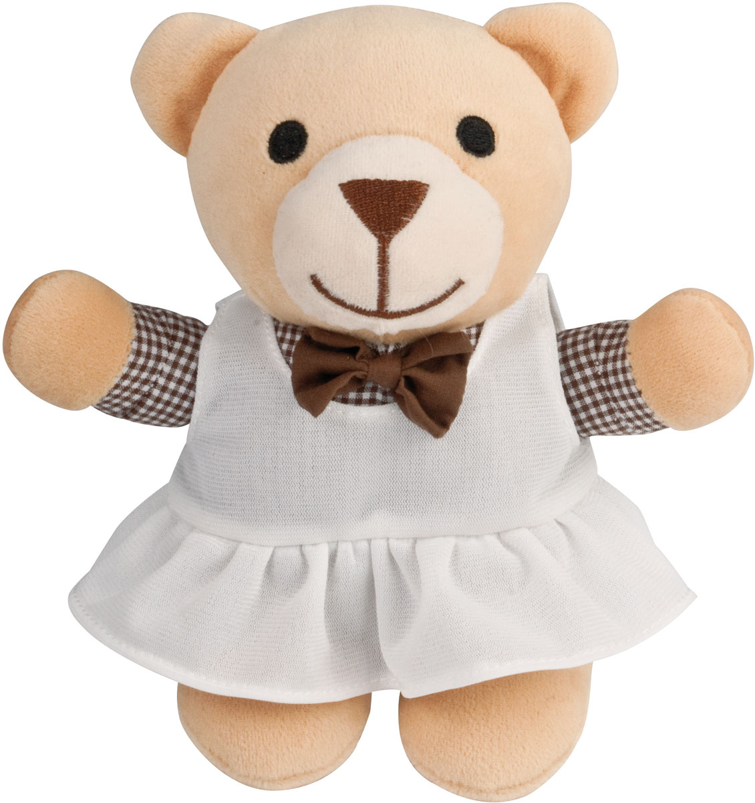
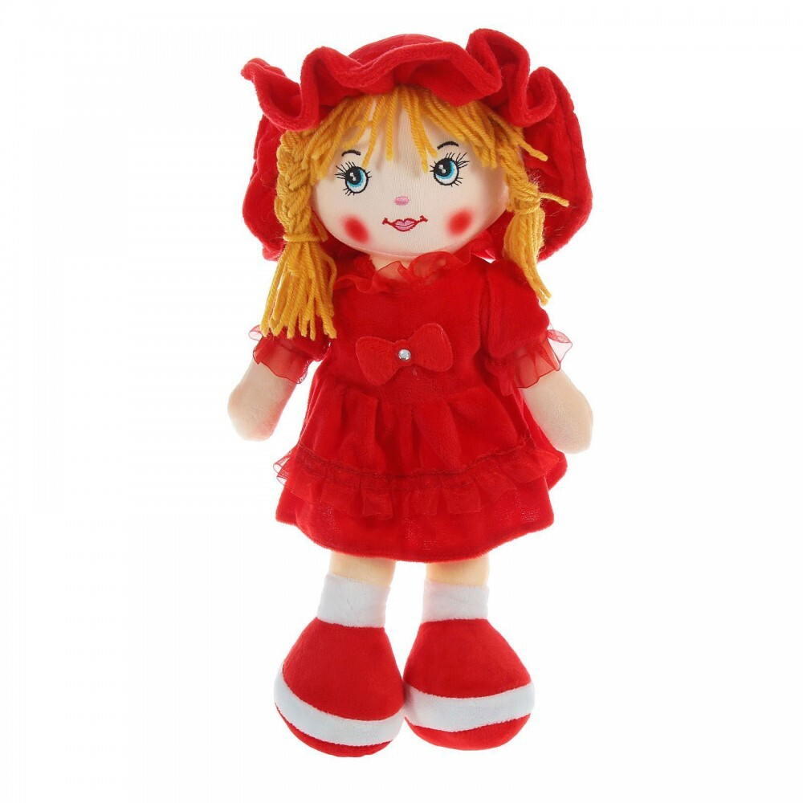
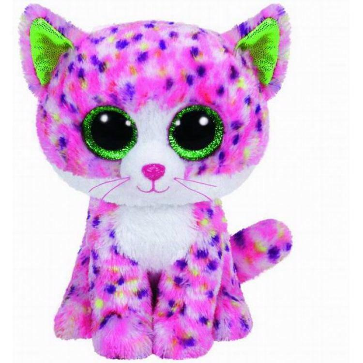

первый блок
второй блок
Мягкие игрушки – это классический подарок! Они были, есть и будут! Мягкая игрушка – универсальна, она живет вне времени и модных тенденций. Вы можете покупать ребенку абсолютно разные игрушки, но плюшевого друга ему ничто не заменит.
Наши игрушки очень приятно обнимать и прижимать к себе. Дети обычно сильнее взрослых переживают что-либо, поэтому им необходимо помогать в преодолении стрессов. Именно эти функции и выполняет мягкая игрушка. Вспомните, ведь у каждого в детстве была любимая мягкая игрушка. Любые мягкие игрушки хранят множество детских тайн и переживаний. И до сих пор у многих еще хранятся их первые мягкие игрушки. Поэтому не лишайте малыша такой радости
третий блок


